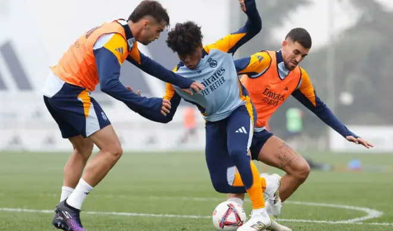
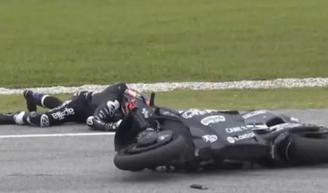
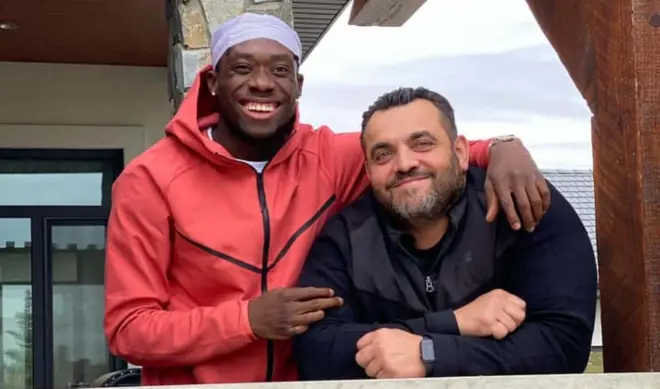

Sin Militao, Rüdiger y Alaba, y con el mercado ya cerrado, Asencio asciende a 'jefe' de la defensa del Real Madrid sólo tres meses después de su debut. Las lesiones le dejan vía libre para seguir siendo importante, y además, con más responsabilidad que nunca. Al menos hasta que Ancelotti recupera efectivos en el centro de la zaga. Hay que echar la vista muy atrás para encontrar un canterano con el impacto en el primer equipo que está teniendo Asencio (Pavón y Mejía a principios de siglo, por ejemplo). El central acaba de romper una barrera 'imposible' siendo jugador del Castilla. Y es que el defensa superó ante el Espanyol el listón de lo mil minutos disputados con el Real Madrid sin formar parte de la nómina de 22 futbolistas del primer equipo. Asencio, que sigue luciendo el dorsal 35, está en plantilla del Castilla por más que Ancelotti lo tenga a sus órdenes de manera ininterrumpida desde principios de noviembre.
El campeón del mundo de MotoGP, Jorge Martín (Aprilia RS-GP), empezó de la peor manera posible los entrenamientos de MotoGP en Malasia, con unas lesiones que le van a condicionar en su primera temporada con Aprilia después de haberse proclamado campeón en 2024. Martín sufrió una primera caída en la curva 1 que no le impidió continuar con la jornada. De hecho, fue el primer competidor en irse al suelo en esta jornada. Poco después, sufrió una segunda caída en la curva 2, en la que se produjo daños en el pie izquierdo y la mano derecha, por lo que tras pasar por la clínica del circuito se optó por trasladarlo al hospital Aurelius de Nilai para una revisión médica completa.
El agente de Alphonso Davies, Nedal Huoseh, confirma que mantuvo negociaciones con el Real Madrid hasta los últimos días del mes de enero, a la vez que confiesa la felicidad del futbolista por seguir en el Bayern. "Siempre hubo conversaciones con varios clubes, y por supuesto, el Real Madrid fue uno de ellos. Pero al final, no se firmó ningún acuerdo ni se llegó a un compromiso con ningún club, ya que dejamos la puerta abierta para que el jugador evaluara todas las opciones por sí mismo", apunta el agente.
